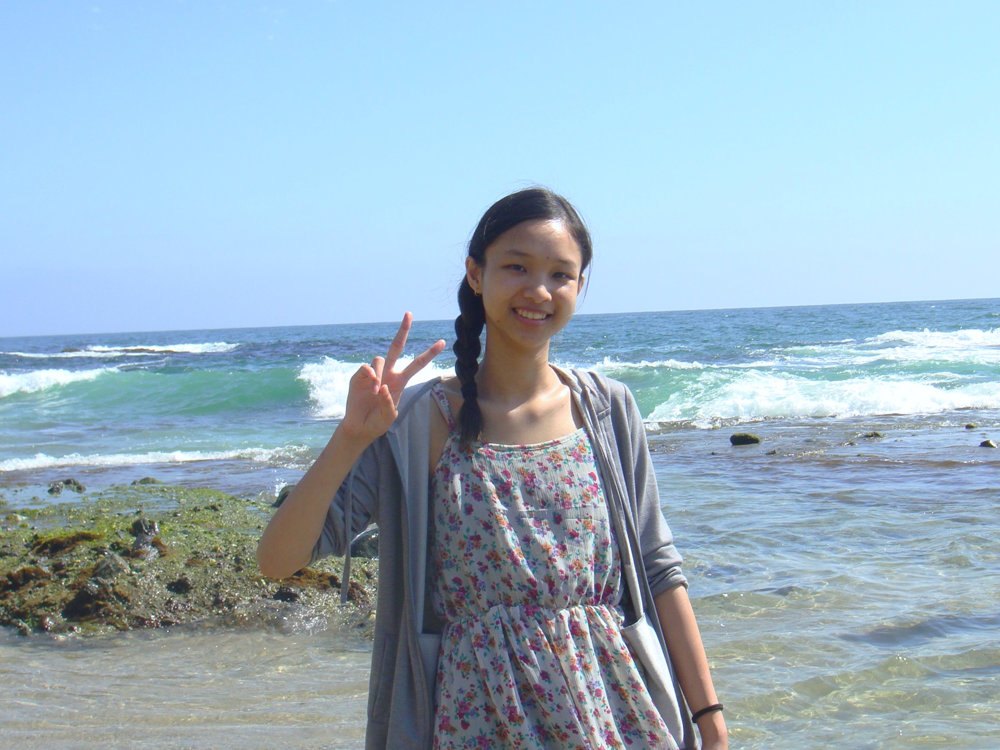
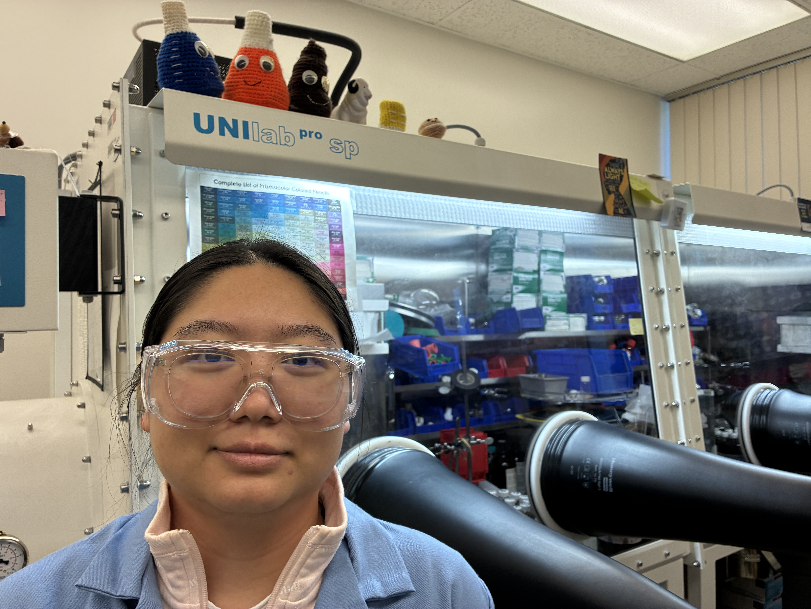

Group Members
Please contact Dr. Stieber by email if you are interested in conducting research in the group.
Group meetings are typically Tuesdays during lunch.
Current Members (click for group pictures)(click for alumni)
Soroush Azizi is a Chemistry major and joined the group in April 2023. He is studying functionalized ligands.
Dr. Moisés Bravo Joined the group in Jun. 2024 as a PLUTO postdoctoral fellow in the STARS program. He is studying C-F activation and crystallography.

Diego Bustamante is a Chemistry major and joined the group in June 2025 as an NSF Fellow. He is studying C-F activation.

Daena Cabral joined the group in Apr. 2025 as a MS student and works on electrochemical CO2 reduction.
Dr. Ana García Álvarez Joined the group in Jun. 2024 as a PLUTO postdoctoral fellow in the STARS program. She is studying C-F activation.
Aaron Gaynes joined the group in Sept. 2023 as a MS student and works on electrochemical CO2 reduction.
Kevin Gindratt joined the group in Dec. 2023 and is a chemistry major. He works on crystallography and ligand synthesis.
Dr. Benjamin Goka is a PLUTO Postdoctoral Fellow in the STARS program and joined the group in Mar. 2024. He is making functionalized ligands for Ni complexes in CO2 reduction.

Angel_Hernandez is a community college student and joined the group in June 2025 as a SURE Fellow. He is making new ligands for CO2 reduction.

Diego Huerta joined the group in Jan. 2025 as a MS student and CSU ARI Fellow. He works on computational studies of C-F and PFAS activation.
Stephanie Jauregui Chemistry Major and joined the group in Oct. 2024 as part of the EFRC center. She is studying electrochemical CO2 reduction.
Dr. Eric Lopes Joined the group in Aug. 2024 as a PLUTO postdoctoral fellow in the STARS program. He is studying S-F activation.
Eddie Madrid Joined the group in Jun.-Aug. 2023 as part of the community college SURE program, and re-joined as a chemistry major at CPP in Aug. 2024. He is studying electrochemical CO2 reduction.

Dr. Zoe Marr Joined the group in Aug. 2023 as a PLUTO postdoctoral fellow in the STARS program. She is studying crystallography and C-F activation.
Mario Moreno Joined the group in Feb. 2024 as part of the EFRC center. He is working on CO2 reduction.

Brennan Ortega Joined the group in Aug. 2024 as an LSAMP Fellow and is working on CO2 reduction.
Emily Pham is a Chemistry major and joined the group in Dec. 2023 as an NSF Fellow doing C-F activation.

Christine Phung is a Chemistry major and joined the group in May 2025 as a STARS Fellow. She is studying systems for evaluating potential extraterrestrial life.
Damara Saggio is a Biology Master's candidate and joined the group as a joint student with Dr. Jamie Snyder in Nov. 2024. She is studying systems for evaluating potential extraterrestrial life.

Daniela Sosa Galindo is a Chemistry major and joined the group in May 2025 as a STARS Fellow. She is studying SO2 activation.

Arnold Tapia Joined the group in Jan. 2025 as part of the EFRC center. He is studying electrochemical CO2 reduction.
Khanh Tran Is a community college student and joined the group in Jun. 2024 and is in the STARS program. She is making metal organic frameworks.

Mindy Wu is a Chemistry major and joined the group in June 2025 as a CSU ARI Fellow. She is studying PFAS activation.

Yin May Pyone is a community college student and joined the group in June 2025 as a SURE Fellow. She is making new ligands for CO2 reduction.